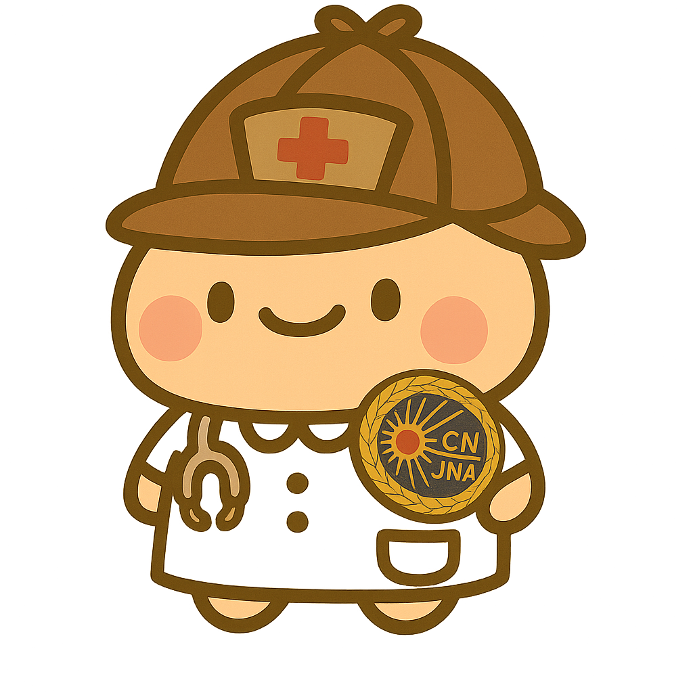
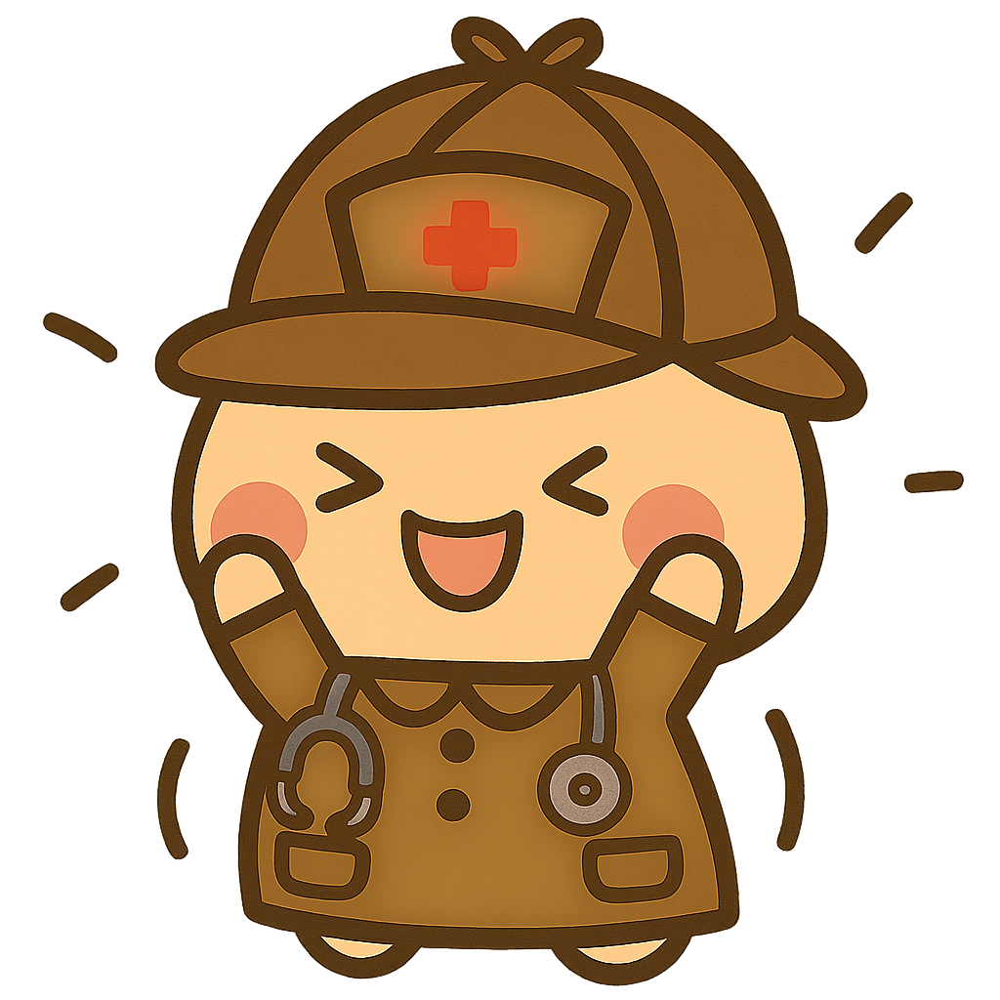

とうせい謎解き 最終章（TMC）
ぼくは とせいくん。
TMC（とうせいメディカルカップ）のマスコットキャラだよ。
最終章は、みんなが体験したブース問題をもう一度クイズでふり返るよ！
まずはあなたのこと
教えて！
名前
所属
職種
クイズをはじめる
※音が出るよ（BGM/効果音）。必要なら端末の音量を調整してね。
次へ
🎉 クリアおめでとう！（最終章）

とうせいの謎・名探偵認定
みんなの力が合わさると、もっと強く、もっと優しい医療になるんだね。
ぼくも、そんなプロフェッショナルになりたいな。ありがとう。
今回の調査を終了する
お疲れ様でした。ありがとうございました。